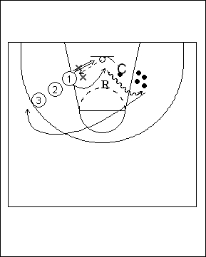

Catégorie : REBOND (Reb-50000)
Déroulement
- Une file de joueurs d’un côté de l’anneau. Deux défenseurs (les X) les bras levés devant le premier joueur de la file. Le Coach se trouve de l’autre côté de l’anneau avec quelques ballons à sa disposition.
- Le Coach lance un ballon contre le panneau au-dessus de l’anneau. Le premier joueur de la file doit aller chercher ce ballon au-dessus des bras des défenseurs et marquer.
- Le joueur 1 récupère son ballon, va le déposer en dribble à côté des autres ballons, puis revient derrière la file de départ. Quand tous les joueurs ont effectué trois fois l’exercice, on change les défenseurs.
Coaching points
- Essayer d’obtenir un rebond offensif suivi d’un panier immédiat. Mais on peut aussi permettre au reboundeur de retomber avec le ballon et de remonter en force, après pump fake.
- Petit à petit, on peut demander une défense un peu plus active de la part des X.
- On peut intégrer ce drill dans une séance de spécialisation pour pivots.